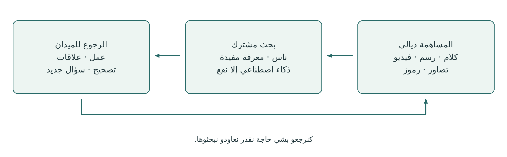
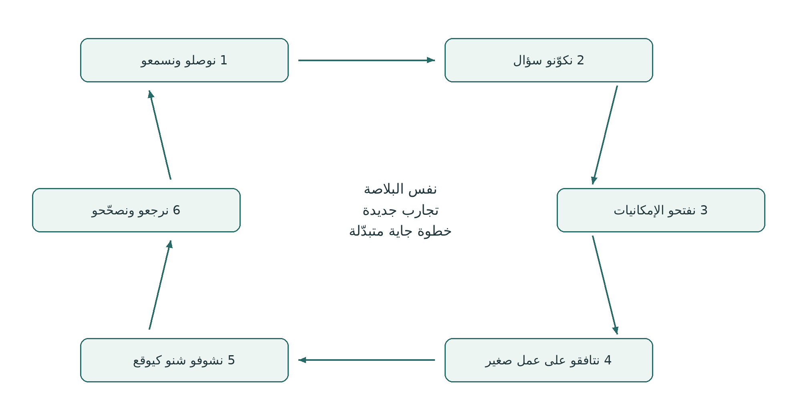
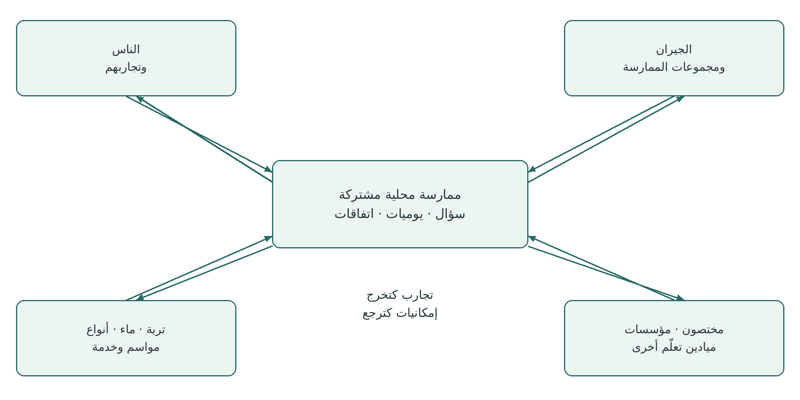
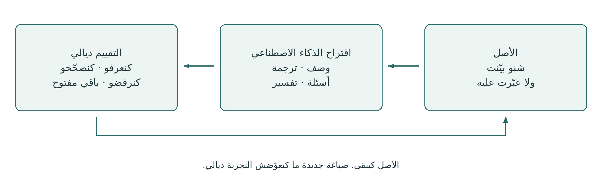

يوميات الميدان
يوميات الميدان
من التجربة الشخصية للقدرة على العمل مع بعضياتنا
دليل عملي لمسارات التعلّم، وPG Ledger، والحوار النقدي مع الذكاء الاصطناعي
نسخة بالدارجة المغربية v0.1.1 · 24 أكتوبر 2026
إصدار Spiralweb Stewardship Association · Spiralweb Papers
تطوّر فإطار العمل على Learning with Living Places
هاد ترجمة مؤقتة بالذكاء الاصطناعي، وما زالت تحت المراجعة التحريرية. ممكن تكون فيها أخطاء ولا تعابير ماشي دقيقة.
يوميات الميدان دليل عملي مفتوح كتنشرو جمعية Spiralweb Stewardship Association عبر Spiralweb Papers. البداية هي خدمة الناس فبلاصة حية: شي حاجة كتلفت الانتباه، كتتوثّق وكتتبحث مع بعضياتنا. كتولي شي خطوة ممكنة، والتجربة كتبدّل الخطوة اللي من بعدها. الدليل كيربط هاد الحركة بالمعرفة المفيدة، والحوار النقدي مع الذكاء الاصطناعي، والموارد اللي تقدر تعاون على استمرار الميدان.
بدا بشي حاجة ملموسة من الممارسة ديالك. الكلام، والرسم، والرموز الشخصية، والتصاور، والفيديو والكتابة يقدرو يحفظو تجربة. المجموعة كتتافق على الأدوات والمساعدة اللي محتاجاها؛ ماشي ضروري تكون عندك تليفون ديالك. المساهمة اللي كتختار كتولي مرجع للمقارنة والتصحيح. الناس هما اللي كيتعاملو مع الذكاء الاصطناعي كأصدقاء نقديين، بوحدهم ولا مع الآخرين. التجربة كتجي اللولة؛ وماشي كلشي كتعيشو خاصو يتسجّل.

ممارسة مترابطة
اليوميات كتحفظ آثار التجربة ديالك. البحث المشترك كيربط مساهمات مختارة بسؤال. PG Ledger كيحفظ الذاكرة المتّفق عليها ديال الأعمال والقرارات والموارد وشنو وقع من بعد. مسار التعلّم اللولبي هو الرجوع اللي كتقدر فيه التجربة تبدّل الفهم والممارسة. الصفحات الجاية كتعرض بحث كامل، ومن بعد كتشرح الأجزاء ديالو.
الدليل كيجمع تطبيق عملي ديال Healthy Roots وPG Ledger وحق الإنسان فالقرار ملي كيخدم مع الذكاء الاصطناعي. فـ spiralweb.earth كتلقى الجمعية وعلاقاتها بالبلايص. وفـ papers.spiralweb.earth كتلقى الأوراق والبروتوكولات والأدوات. تقدر تستعمل هاد المادة بلا شراكة مع الجمعية. والتجربة ديالك تقدر حتى تخرج باقتراحات لتغيير الأدوات المشتركة.
استعمل الدليل باستقلالية وكيّفو مع السياق المحلي. تبع المقدّمة، ولا بدا بسؤال حاضر، ولا رجع للنماذج حسب الحاجة. حتى واحد ما خاصو يعمّر الأوراق كاملة. الفهرس والروابط قابلين للنقر؛ وروابط المفاهيم كتوصل للأعمال المرجعية. الأوراق اللي يمكن تنسخ كتجي من بعد النص الرئيسي.
يوميات الميدان · v0.1.1 1 / 27
الفهرس والأدوات العملية
بدا بمثال البحث الكامل وبالفرق بين اليوميات والسجل. النص الرئيسي فالصفحات 3–13. بدا بمساهماتك فالصفحات 14–16. ملي تحتاج المجموعة لذاكرة مشتركة، اختار من النماذج فالصفحات 17–26.
03 بحث من أول ملاحظة حتى الرجوع
04 اليوميات والبحث المشترك وPG Ledger
05 الحركات الستة لمسار التعلّم اللولبي
07 التقييم، والمجهول، واللي ما كيتسجّلش
08 من مساهمات شخصية لسؤال مشترك
09 الإنسان كصديق نقدي للذكاء الاصطناعي
12 اقتصاد العناية المسؤولة بشروط الحياة والإمكانيات المشتركة
13 الذاكرة المشتركة والمسؤولية والتحقّق
16 ورقة الحوار مع الذكاء الاصطناعي والمشاركة المختارة
17 ملي تحتاج المجموعة لذاكرة مشتركة والنموذج 1
شكون كيستعمل شنو؟ اليوميات والأوراق المساعدة متاحة للجميع. النموذجان 2 و3 كيساندو الملاحظة والعمل ديال المجموعة. النماذج 1 و4 و5 كيساندو المراجعة المشتركة والقرارات والسجلات المالية. الناس اللي عندهم مسؤولية متّفق عليها كيحافظو على السجلات وكيأكدوها؛ وكل واحد معني خاصو يقدر يسول ويصحّح.
حتى واحد ما خاصو يعمّر الأوراق كاملة. الخانات تقدر تبقى خاوية وما كتتعمرش بالتخمين. استعمل طرق التعبير وكمية التوثيق اللي كتحتاجها المهمة.
يوميات الميدان · v0.1.1 2 / 27
بحث من أول ملاحظة حتى الرجوع
هاد المثال كيبين كيفاش اليوميات والحوار والأدوات والعمل يقدرو يخدمو مع بعضياتهم. راه مثال للتجريب، ماشي تقرير على نشاط وقع فعلاً.
شي حاجة كتلفت الانتباه
واحد الفلاّحة كتصوّر بقعة ديال التربة ناشفة وكتشرح بلغتها شنو لاحظات. واحد آخر كيرسم بلاصة باينة أرطب. كل واحد كيحتفظ بمساهمتو فاليوميات مع مرجع بسيط. فهاد المرحلة، الملاحظات والتفسيرات المحتملة مختلفة.
سؤال مشترك كيتكوّن
فلقاء كيعرضو المساهمات اللي اختارو. المجموعة كتقارن التجارب وكتختار تبحث فغطاء التربة. كتشرح علاش وكتخلي أسئلة أخرى لوقت آخر. الذكاء الاصطناعي يقدر يعاون فإعادة الصياغة ويقترح تفسيرات مناسبة. الناس كيتحقّقو وكيصحّحو القفز من الملاحظة للادعاء.
الاتفاق على عمل
المجموعة كتحدّد تجربة صغيرة، وكتوضح الصلاحيات، وكتتافق على الوقت والمسؤوليات والمواد والزيارة الجاية. ورقة العمل كتحفظ الاتفاق. يمكن ربط مساهمة من اليوميات بالذاكرة المشتركة بمرجع بلا ما نعاودو نكتبوها.
الخدمة اللي وراء التجربة كتبان
جار كيعرض بقايا التقليم. الفريق كيتحقّق واش مناسبة وكيتافق على النقل والعناية المستمرة. كيبان ليه أن شخص واحد غادي يحمل خدمة كثيرة بين اللقاءات. السؤال كيتوسّع: كيفاش تستمر العناية الضرورية؟ القرار والمصروف الفعلي كيتسجّلو كل واحد فالنموذج ديالو.
الميدان والمجموعة كيردّو
فالزيارة الجاية، كيقارنو الملاحظات الجديدة بالبداية. الذكاء الاصطناعي اقترح أن استهلاك الماء نقص، ولكن هادشي ما تقاسش. المجموعة كتصحّح النص وكتبحث شنو تقدر تقول. يمكن النقل طلب خدمة كثيرة، ولا شروط أخرى كتفسّر الفرق. كتتبدّل التجربة وتقسيم الخدمة.
التجربة كتفتح إمكانية جديدة
المجموعة تقدر دابا تجيب مستشار ولا مدرسة فلاحية يعاونو فبحث سؤال أوضح. اتفاق جديد يقدر يفتح مواد ولا تعلّم ولا تعويض على المتابعة الضرورية. ملي كترجع المجموعة، كتبحث شنو ولا ممكن فعلاً. الفهم المشترك كيولي مؤسّس مزيان، ولو يبقى الاختلاف وعدم اليقين.
هاد المسار يقدر ياخد أيام خدمة ولا موسم. سؤال أحسن، ولا توقّف ضروري، ولا قرار معلّل بعدم الاستمرار يقدرو يكونو نتيجة مهمة ديال الرجوع للبحث.
يوميات الميدان · v0.1.1 3 / 27
اليوميات والبحث المشترك وPG Ledger
اليوميات والسجل كيحفظو أجزاء مختلفة من نفس الممارسة. اليوميات فيها مساحة للملاحظة والبحث. السجل كيربط مادة مختارة بالذاكرة المشتركة اللازمة للمسؤولية والمتابعة. المسار اللولبي حركة مع الوقت؛ ماشي وثيقة أخرى.
الجزء | الوظيفة | مثال ملموس |
|---|---|---|
اليوميات ديالي | ملاحظاتي وأسئلتي وتجربتي وتأمّلاتي بالوسائل اللي اخترت. | فيديو لحركة الماء مع الشرح ديالي. |
البحث المشترك | حوار ومقارنة وتحقّق بالمعرفة المناسبة حول سؤال مختار. | كنبحثو علاش الماء كيتجمع هنا. |
PG Ledger | ذاكرة متّفق عليها وقابلة للتصحيح لأساس الخدمة والمسؤوليات والموارد والنتائج اللاحقة. | الملاحظة كتترابط بعمل وبزيارة من بعد. |
خمسة نماذج عملية | أدوات لوضعيات معيّنة فالذاكرة المشتركة. | ورقة كتسجّل عمل؛ وأخرى مصروف. |
الرجوع | التجربة تقدر تبدّل الفهم والاتفاقات والخطوات الجاية. | من بعد الشتا كنراجعو التجربة وكنبدلوها. |
ملي كتولي مادة من اليوميات مفيدة للسجل
ملي يكون للمجموعة هدف واضح باش ترجع لمساهمة وتربطها بالخدمة المشتركة، كتتافق على الجزء المعني وشكون يوصل ليه وكيفاش يتصحّح. مرجع للأصل يقدر يكفي. المادة الشخصية ما كتوليش مشتركة تلقائياً، وما كاين حتى إلزام بإدخال اليوميات كاملة.
شنو كيخلّي السجل ذاكرة حية
ورقة بوحدها أثر مسجّل. الآثار المترابطة كتولي ذاكرة نافعة ملي نقدر نتبعو الروابط والمصادر والمسؤوليات. PG Ledger كيحيا بالرجوع: الناس كيشوفو شنو وقع من بعد وكيخليو النتائج تبدّل الخطوة الجاية. خمسة نماذج معمّرين ما كيكفيوش بوحدهم باش توجد هاد الممارسة.
اليوميات الشخصية تقدر تبقى مستقلة. والخدمة المشتركة تقدر تبدا بسجل محلي موجود ولا بحوار. التجربة عندها قيمة قبل التسجيل؛ الورقة ماشي شرط باش يتسمع صوتك. المهم هو الربط بين التجربة والاتفاق والعمل والتصحيح.
يوميات الميدان · v0.1.1 4 / 27
الحركات الستة لمسار التعلّم اللولبي
التعلّم كينشأ من الرجوع لسؤال وآثارو العملية وتجارب الآخرين. دورة تقدر تدوم حوار، ولا أيام، ولا موسم. التسلسل كيعطي الاتجاه؛ والإيقاع والرجوع كيتبعو حاجة البحث.

1. نوصلو ونسمعو. شكون وشنو كاين هنا، وباش من تجربة جينا؟
2. نكوّنو سؤال مع بعضياتنا. شنو بغينا نفهمو ولا نبدلو؟
3. نفتحو التفسيرات والإمكانيات. شنو التأويلات والبدائل اللي خاصنا نبحثو؟
4. نخليو العمل ممكن. شنو غادي نجرّبو، وباش من موارد ومسؤوليات؟
5. نلاقيو شنو كيوقع فعلاً. شنو كنلاحظو، حتى المفاجآت؟
6. نرجعو ونخليو التجربة تبدّل طريقة الخدمة ديالنا. شنو يكمل، ولا يتبدّل، ولا يتوقف؟
توقّع مؤقت كيربط الخدمة
رهان عمل (working wager) كيوضّح شنو كتتوقّع المجموعة وشنو يقدر يبدّل فهمها. كيربط السؤال بالعمل والتعلّم والموارد والمراجعة. مثلاً: غطاء معيّن للتربة يقدر يحفظ الرطوبة إلا كانت المادة مناسبة والخدمة قابلة للاستمرار. كنبحثو حالة النباتات والتفسيرات الأخرى وحجم الخدمة الفعلي.
يوميات الميدان · v0.1.1 5 / 27
تجربة بأصل واضح
اليوميات تقدر تكون فالورق ولا الصوت ولا التصاور ولا الفيديو. كل واحد كيختار كيفاش يعبّر. اليوميات المشتركة كتحفظ مساهمات مختارة واتفاقات تستاهل تبقى. الاختلافات كتبقى محفوظة. المضيف ولا المشغّل ولا الميسّر ما يقدرش يهضر باسم تجربة الآخرين.
الملاحظة قبل التركيب
بدا بشنو كيلحظ الشخص ولا كيدير ولا باغي يبيّن. ربط المادة اللي خاصنا نرجعو ليها بتاريخ وبلاصة ومصدر. مثلاً B01: الزيارة اللولة فـ[التاريخ] فـ[المكان]؛ التصاور والصوت يكونو B01-photo وB01-audio. المجموعة كتختار النظام ديالها وكتحمي البلايص والهويات الحساسة.
«ثلاث نباتات وراقها صفرين» ملاحظة. «كنظن ناقصهم الماء» تفسير. التجربة معرفة تقدر تتصحّح بالتكرار والقياس وتجارب أخرى. التسجيل كيحفظ المساهمة؛ ما كيبرهنش بوحدو على التفسير.
المساعدة فالتعبير والتأكيد
ملي شي واحد كيساعد فالكتابة ولا الترجمة ولا التسجيل، خاص كلام الشخص ومعناه يبقاو محفوظين. الصياغة كترجع ليه يصحّحها ولا يأكدها. فالتوثيق المعني، كنوضحوا المساعدة والترجمة. الأصل كيبقى ملي يتبدّل الشرح. التصحيح الشفوي عندو نفس القيمة ديال المكتوب وخاصو يقدر يبدّل الخدمة.
التحكّم الشخصي والأجهزة المشتركة
الحفظ الشخصي، وولوج المجموعة، والمعالجة بالذكاء الاصطناعي، والنشر اختيارات منفصلة، كل واحد بهدف ومتلقّين محدّدين. شي حوايج تقدر تبقى بلا تسجيل. المعلومات الضرورية للمالية والسلامة كتتحدّد وكتتشرح بوحدها.
الأصل هو ما نتشاركوش تصاور كتعرّف بالأطفال. أي استثناء خاصو توضيح مسبق للقواعد، والموافقة المناسبة من الوالدين ولا الوصي، ورأي الطفل حسب السن والنضج. خصوصية الطفل وسلامتو أولى.
تافقو على المسؤولية والولوج والحفظ والمزامنة ومسح النسخ فالأجهزة المشتركة. أمّنو النسخة المتّفق عليها قبل المسح. قبل المعالجة بخدمة ذكاء اصطناعي خارجية، وضّحو شنو غادي يتصيفط وشروط الحفظ وإعادة الاستعمال. صيفطو غير المادة المختارة الضرورية.
الوقت جزء من المهمة
فـ Learning with Living Places، الملاحظة واليوميات والتفسير المشترك المتّفق عليهم داخلين فوقت التعلّم والعمل المؤدّى عنه. المساهمات الزائدة تطوّعية. المجموعات الأخرى كتتافق على حجم واقعي. التوثيق خاصو يعاون الخدمة ويتبسّط إلا ولا عبء.
يوميات الميدان · v0.1.1 6 / 27
التقييم، والمجهول، واللي ما كيتسجّلش
التقييم كيهم حالة معيّنة فوقت معيّن. قرار التسجيل كيهم شنو خاصو يبقى محفوظ أصلاً. هادو جوج أمور مختلفين.
ألوان الإشارة كتعبّر على حكم إنساني معلّل
العلامة | المعنى للخطوة الجاية |
|---|---|
خضر | المعطيات المتاحة كتسمح بخطوة صغيرة ضمن الصلاحيات المتّفق عليها. |
أصفر | الشروط كتحتاج انتباه وتعديل وتقييم جديد. |
حمر | كاينة حاجة للحماية ولا التوقّف ولا الإصلاح. |
مجهول | ما كايناش معطيات كافية للتقييم. هادشي ماشي اللون الأصفر. |
قيّمو البلاصة الحية، وقدرة الناس يكملو، والتدبير المشترك كل واحد بوحدو. احتفظو بالتاريخ والأساس وعدم اليقين؛ ما تحسبوش لون متوسّط. الخضر فجهة ما كيعوّضش الحمر فجهة أخرى. ملي الناس يعيّاو، وقّفو ولا نقصو الخدمة اللي معتمدة عليهم؛ العناية الضرورية والتسليم المسؤول يقدرو يكملو.
المجهول مختلف على غير معني والمتروك عمداً
مجهول: السؤال معني ولكن مازال ما كنعرفوش كفاية. غير معني: السؤال ما كينطبقش على البحث. متروك عمداً: شي حاجة ما تسجّلاتش ولا ما تضمناتش فهاد المادة؛ هادشي ما كيقول والو على حالتها. الخانة الخاوية ما عندهاش معنى واحد؛ لا الإنسان لا الذكاء الاصطناعي يحق ليهم يخمّنو معناها.
الحق فترك شي حاجة بلا تسجيل
السؤال يقدر يبدا بملاحظة ولا تجربة شخصية ولا شي حاجة كتتعاش وكتلقى العناية بلا كتابة ولا تسجيل. كل واحد كيختار شنو يحفظ. التجارب الداخلية ديال الآخرين هما اللي يختارو يعرضوها. المعرفة المشتركة المحمية كتخضع لحقوق واتفاقات المعنيين.
حتى وضع علامة «متروك عمداً» ماشي واجب. حتى الكشف على وجود شي حاجة يقدر يكون حساس. السكوت ما كيحتاجش تبرير وما كيعطيش الإذن نملأو الفراغ. المعلومات الضرورية المتّفق عليها للمالية والسلامة والمسؤولية المشتركة كتتحدّد بوحدها؛ ما كتعطيش الولوج لليوميات كاملة.
مثلاً رطوبة التربة تقدر تبقى مجهولة حيت ما تدرساتش كفاية. سؤال على واد يقدر ما يكونش معني بهاد الحوض. تسجيل شخصي يقدر يبقى خارج المادة المشتركة بلا حتى الإشارة ليه.
الأعمال المرجعية: Knowing From the Ground · Moral Biology
يوميات الميدان · v0.1.1 7 / 27
من مساهمات شخصية لسؤال مشترك
AnchorPoint كيساند مع الوقت العلاقات المحلية بين الناس والبلايص والمعرفة والاتفاقات والموارد. البحث المشترك يقدر يكون حضورياً ويكمل بالعلاقات وعبر الإنترنت. رواية مشتركة بوحدها ما كتخلقش صلاحية مشتركة؛ حقوق القرار خاصها اتفاق.

بداية مشتركة بسيطة
كل واحد عندو الفرصة يعرض مساهمة مختارة ويقدر حتى ما يشاركش. المجموعة كتبحث فالتشابه والاختلاف وكتختار سؤال بتفسير واضح، حسب الاهتمام والأهمية والوقت والإمكانية. الأسئلة الأخرى كتبقى لرجوع لاحق. خاص السجل يحفظ الاختلاف على الاختيار، وشكون ما تسمعش صوتو.
ملي كيتجاوز السؤال المجموعة
تافقو مع من تتاصلوا، وشنو بغيتو تسولو، وشنو مسموح يتشارك، وشكون يرجع بالجواب. النصيحة وتحليل المختبر والحوار المؤسسي والتواصل مع فلاحة آخرين كيتدرسو مع التجارب الأصلية. الجواب الخارجي ما يوجّهش الخطوة الجاية حتى يدوز من المراجعة والاتفاق المحلي المناسب. هادا هو bottom-linking فالممارسة.
روابط الإقليم البيئي
تبعو الشروط اللي معتمد عليها السؤال: الماء والتربة والأنواع والبذور والغذا والخدمة والقرارات المؤسسية. الخرائط وتقويم المواسم يقدرو يبيّنو الروابط اللي كتتجاوز حدود الملكية والمشروع. الأصوات والمناهج المختلفة يقدرو يصحّحو بعضياتهم. الواقع فالميدان يقدر يناقض تفسيراتنا كاملة.
يوميات الميدان · v0.1.1 8 / 27
الإنسان كصديق نقدي للذكاء الاصطناعي
بوحدهم ولا مع الآخرين، الناس هما الأصدقاء النقديون للذكاء الاصطناعي: منفتحين على المساعدة ديالو ومنتبهين للأخطاء والمبالغة وتغيّر المعنى. يقدر يعاون فالتعبير والترجمة وخدمة المصادر والمقارنة. المساهمة ديالو كتولي نافعة بالفحص الإنساني والتجريب فالممارسة.

تحقّق من الوصف قبل التفسير
الذكاء الاصطناعي كيتعطى أولاً مهمة واضحة ومحدودة النطاق والمادة المختارة ليها. مع صورة ولا تسجيل، تحقّق من الوصف قبل ما تكمل. الكلام والتصاور والترجمات غير الواضحة كتبقى معلّمة بهاد الصفة. إلا ما كانش الذكاء الاصطناعي كيتعامل مزيان مع اللغة ولا نوع المادة، استعنو بإنسان متمكّن.
نص البداية
وصف أولاً غير شنو كتقدر تقرا ولا تسمع ولا تشوف فعلاً فالمادة المختارة. بيّن عدم اليقين وتسنى التصحيح ديالي. فرّق بين الملاحظة ديالي والتفسير ديالي والاقتراحات ديالك. ما تعمّرش الخانات الخاوية. فرّق بين مجهول وغير معني ومتروك عمداً ملي يكونو مذكورين. ما تستنتج والو من السكوت وما تحاولش ترجع المحتوى المحذوف. من بعد فقط اقترح تفسيرات بديلة وطرق لبحثها. ما تخترعش حتى معلومة ولا مصدر.
من بعد سول: شنو جا من المادة ديالي؟ شنو زاد الذكاء الاصطناعي؟ شنو المصادر اللي نقدر نتحقّق منها؟ واش بقا عدم اليقين والاختلاف؟ شنو محتاج ملاحظة أخرى ولا رأي مختص؟ الذكاء الاصطناعي يقدر حتى يفوّت إمكانية مهمة؛ الجواب ديالو ما كيحدّدش حدود البحث.
Last Impulse فالممارسة
الشخص المعني يقدر يفهم ويصحّح ويرفض ويوقف رواية ولا عمل، وكيتحمّل المسؤولية داخل صلاحياتو. السكوت ماشي موافقة. الاتفاق على الصياغة ماشي إذن بالنشر ولا بالعمل فالميدان.
مثلاً «حسّيت التربة أبرد» كتولي فنص الذكاء الاصطناعي «استهلاك الماء نقص». الشخص كينبّه للقفزة وكيصحّح وكيقرّر شنو البحث اللازم. الأصل ومساهمة الذكاء الاصطناعي والتصحيح كيعطيو أساس ملموس لتقييم AI in Right Relationship.
يوميات الميدان · v0.1.1 9 / 27
أنشطة تعلّم بهدف واضح
نشاط التعلّم كيعطي طريقة لتطوير مهارة ولا فهم معيّن. يقدر يكون حوار قصير ولا جولة فالميدان ولا تجربة ولا عرض تطبيقي ولا مهمة بين اللقاءات. اليوميات تقدر تحفظ آثار التجربة. استعمل نموذج عملي ملي تكون حاجة محدّدة لسجل مشترك.
النشاط | شنو كنتمرّنو عليه | مادة ممكنة |
|---|---|---|
الملاحظة والوصف | التفريق بين الملاحظة والتفسير المحتمل ديالها. | رسم ولا كلام ولا صورة ولا تسجيل شخصي. |
مقارنة بلايص ولا أوقات | بحث التشابه والاختلاف وشروط المقارنة. | جوج ملاحظات بسياق واضح. |
فحص مساهمات الذكاء الاصطناعي | التعرّف على رواية معاد صياغتها وتصحيحها ومساءلتها. | الأصل واقتراح الذكاء الاصطناعي والتصحيح الإنساني. |
الاختيار والعمل مع بعضياتنا | شرح اختيار وتوضيح الصلاحية والموارد والمتابعة. | سؤال مشترك واتفاق بحدود واضحة. |
طلب المعرفة ولا الدعم | التعبير على حاجة وتقييم جواب الآخرين. | طلب وشي حاجة مفيدة كترجع منو. |
إظهار الممارسة للآخرين | شرح وإظهار شنو تعلّمنا مع مساحة للأسئلة. | عرض تطبيقي ولا مساهمة مختارة للتعلّم. |
ستة أسئلة للتخطيط
الهدف: شنو خاص هاد النشاط يعاون الناس يتعلّمو؟
البداية: باش من تجربة ولا مادة غادي نبداو؟
العمل: شنو غادي نديرو بالضبط، وباش من مساعدة ووقت؟
الحوار: شنو غادي نبحثو مع بعضياتنا، وفاش نقدر نختلفو؟
الذاكرة: شنو يستاهل يبقى، عند من وباش من شكل؟
الرجوع: إمتى وكيفاش غادي نعاودو نستعملو التجربة؟
المهام المتّفق عليها داخلة فوقت التعلّم والعمل المؤدّى عنه. ما كاينش توقّع لتسليم يومي من اليوميات الشخصية. النشاط كينجح ملي كيفتح تعلّم وعمل مفيدين؛ كمية التوثيق ماشي هدف بوحدها.
يوميات الميدان · v0.1.1 10 / 27
تنظيم الخدمة مع الوقت
إيقاع البحث واستمراريتو
نهار الخدمة يقدر يبدا بشنو باغية المجموعة تلاحظ ويسالي بشنو محتاج متابعة. كترجع المجموعة للبحث حسب الأعمال والمواسم والقرارات الملموسة. كتتافق على إيقاع المراجعة اللي كيربط الأسئلة والموارد والتجارب بلا تكرار غير ضروري للتوثيق.
مسارات التعلّم الخمسة هي: التربة والماء والبلاصة؛ أنظمة الغذا ومواطن الكائنات؛ اقتصاد العناية المسؤولة بشروط الحياة؛ التعاون والمؤسسات؛ والتعليم والتبادل. سؤال واحد يقدر يجمع أكثر من مسار. كيساعدو نوسّعو البحث ونشوفو روابط ما انتبهناش ليها. خلّيو حتى مساحة لعرض تقنية ولا للاستكشاف ولا لمشاركة مفاجأة بلا شرط التسجيل.
مثال بجوج قطع للتعلّم
فضيعة كيتوجدو جوج قطع لتجارب زراعية مختلفة. الفريق كيوصف شروط البداية بملاحظاتو وببحث مختص مناسب. كيختار سؤال، مثلاً على غطاء التربة والماء، وكيتافق على تجربة صغيرة وكيوثّق المواد ووقت الخدمة. كتشارك مدرسة فلاحية ولا مستشار إلا كان هادشي مفيد. فالزيارة الجاية، الفريق كيراجع المسار والخطوة الجاية.
المرحلة | الخدمة المشتركة | أساس المرحلة الجاية |
|---|---|---|
التحضير | مسؤولو رعاية البرنامج كيجرّبو الطريقة وكيوضّحو اللغة والولوج والأدوار والسلامة. | عرض أولي مجرّب واتفاقات واضحة |
الافتتاح | المجموعة كتجرّب طرق التعبير وكتساهم فاختيار الأسئلة. | أسئلة محلية وأدوات مكيّفة |
البحث | خدمة عملية وملاحظة وحوار مطّلع وتجارب محدودة. | تجارب وتصحيحات وقرارات |
التبادل | مادة مختارة كتدخل فحوار مع ناس معنيين آخرين. | أجوبة نافعة وروابط جديدة |
الاستمرار | كتتراجع المعرفة والمعدات والموارد والمسؤوليات. | تسليم متّفق عليه وخطوات واقعية |
التحضير والعناية
خصّصو وقت لتجريب الأدوات قبل بداية المجموعة. تافقو على الترتيبات والمعدات والسلامة والكفاءات اللازمة قبل العمل. الملاحظة ما كتعطيش الإذن لمخالطة خطيرة للماء ولا التربة ولا النباتات ولا التجهيزات. المهام المتّفق عليها كيتوفّر تمويلها ولا كتتحدّد حدودها بوضوح. التطوّر البيئي والتعاون يقدرو يستمرو من بعد المنحة بلا ما تكون هي كتموّلهم.
يوميات الميدان · v0.1.1 11 / 27
اقتصاد العناية المسؤولة بشروط الحياة والإمكانيات المشتركة
Stewardship economy كيسول كيفاش الخدمة والمعرفة والموارد والمسؤولية يقدرو يساندو شروط الحياة اللي معتمدين عليها الناس والمجتمعات. الأداء يقدر يحمي الوقت وقدرة الناس يكملو؛ ما كيعبّرش على القيمة الكاملة لشخص ولا لبلاصة. البحث كيربط الزراعة بالعلاقات والشروط المؤسسية اللي كتخلي العناية تستمر.
Abundance، أي الوفرة، كتشير للإبداع الإنساني وللإمكانيات اللي كيقدر يفتحها التعاون. السؤال ملموس: شنو كاين دابا، وشنو نقدر نطوّرو، ولشنو نقدر نوصلو مع بعضياتنا؟ الإمكانيات تقدر تكون مواد ونصائح ومهارات وفلوس وولوج ومساعدة فالخدمة. الندرة والمصاريف الضرورية كتبقى واضحة.
سؤال من الميدان | صلة ممكنة | شنو يقدر يرجع منها |
|---|---|---|
كيفاش كتحتفظ التربة بالرطوبة؟ | جيران عندهم فائض ديال مادة مناسبة | غطاء للتربة واتفاق على النقل |
كيفاش تتحسّن التربة؟ | ناس كيعرفو التسميد ومربّيو الماشية | كمبوست ولا سماد بلدي مناسب، مع النصيحة |
كيفاش نكثّرو النباتات؟ | مجموعة تبادل البذور ولا مدرسة فلاحية | بذور وعُقَل (أغصان للإكثار) ومهارات الإكثار |
كيفاش نصلحو السقي؟ | فلاحة واستشارة تقنية | تجربة ولا إصلاح ولا ميزانية |
شنو كيشرح هاد الضرر؟ | مختص مناسب | تقييم وخطوة آمنة |
كيفاش نشاركو التجربة؟ | فلاحة ومجموعات تعلّم أخرى | عرض تطبيقي ولا مادة تعليمية |
كيفاش نموّلو الخطوة الجاية؟ | اقتراح المجموعة والحوار | طلب محدّد بالأدلة والأثمنة |
شكون يقدر يحمل الخدمة؟ | مراجعة مشتركة للمهام | تعويض الغياب وتسليم المسؤولية |
تبعو المساهمة حتى ترجع للممارسة
فرّقو بين فكرة واتصال واتفاق ومساهمة وصلات وأثر فعلي. تحقّقو من المناسبة والسلامة والنقل والوقت والملكية والمسؤولية اللاحقة. تبرّع محتمل ماشي مورد وصل فعلاً. تبعو العروض المهمة اللي ترفضات والخدمة المخفية، حسب الإمكانية والحدود المتّفق عليها.
The Steward’s Journey كيوصف علاقات مختلفة ممكنة مع الخدمة بلا ترتيب ثابت. فلاح يقدر يبحث فبلاصتو ولا يتبادل التجربة ولا يدخل فاتفاق محدود لتجربة. الدعم محتاج اتفاق ديالو؛ ماشي مكافأة على المرور من مراحل مفروضة. تعليم الأقران وجمع التمويل يقدرو يتطوّرو إلا بغاو الناس وقدرو عليه.
يوميات الميدان · v0.1.1 12 / 27
الذاكرة المشتركة والمسؤولية والتحقّق
PG Ledger كيربط الملاحظات المختارة بالأعمال والقرارات والموارد والنتائج اللاحقة. استعملو النماذج حسب المهمة، والأصول والمراجع بلا إعادة نفس المادة فحقائق متوازية.
النموذج العملي | الوظيفة |
|---|---|
الملاحظة | كتحفظ شنو تلاحظ، والمصدر والسياق وعدم اليقين. |
عمل بحدود واضحة | كيحدّد حتى لثلاثة أعمال ممكنة، بالمسؤولية وحق التوقّف والرجوع. |
ذاكرة القرارات | كتحفظ الأسباب والصلاحية والاختلاف المهم والتغييرات اللاحقة. |
السجلات المالية | كتربط تدفّق مالي بالهدف والوثائق والملاحظة اللاحقة. الحسابات الرسمية كتبقى منفصلة. |
المراجعة المشتركة | كتفصل بين تقييم الأرض والحياة (Land / Life)، وقدرة مسؤولي الرعاية يكملو (Steward Viability)، والتدبير والمشترك (Governance / Commons). بلا نقطة إجمالية. |
اتفاقات قابلة للتطبيق
المجموعة كتتافق على المسؤولين والبدلاء وصلاحيات القرار وتدبير الاختلاف ومواعيد المراجعة. التمويل والبحث المحلي كيتربطو بأهداف ومسؤوليات واضحة. الناس ما كيوافقوش على أدائاتهم هما وما كيعالجوش الشكايات عليهم. كاين طريق تواصل مستقل، معروف ومتاح.
اللي بغا يقدر يطوّر تعليم الأقران ولا مجموعات تعلّم جديدة ويحدّد أهدافو. التنظيم كيسمح بالاستمرارية والتناوب وكيبيّن العناية والترجمة والتنسيق. التطوّع ما كيتستعملش لإخفاء وظائف ضرورية بلا تمويل.
نبحثو واش الطريقة كتخدم
بالبحوث الفعلية كنقيّمو واش كل واحد يقدر يتعرّف على مساهمتو ويصحّحها، ويسائل الذكاء الاصطناعي، ويأثّر فسؤال مشترك، ويستعمل التجربة ملي يرجع. كنحتفظو بالمساهمات النافعة والمضلّلة مع التصحيح الإنساني. هادشي أساس للبحث فالتعلّم واستعمال الذكاء الاصطناعي، بلا خلط بين نص سلس وتعلّم. جرّبو حتى سهولة البداية وفهم الرموز وواش التصحيح كيبدّل الخدمة فعلاً.
تبعو حتى التغيّر فالميدان وحجم الخدمة والصلاحية الفعلية للقرار. التحسّن البيئي ما كيعوّضش الإرهاق ولا تجاهل الحقوق. المجهول واختيار عدم التسجيل ماشي فشل. التجربة تقدر تصحّح الأدوات والبحث والبروتوكول. قيّمو نفع الذكاء الاصطناعي من بعد حساب وقت التحقّق والترجمة والخدمة اللي تحوّلات للآخرين.
يوميات الميدان · v0.1.1 13 / 27
ورقة المساهمة ديالي
استعمل الرسم والرموز والكلام والتصاور والصوت ولا الفيديو. هاد الورقة اختيارية؛ رجع لأصل اخترتيه. التجربة ما خاصهاش تتسجّل باش يكون عندها وزن فالحوار.
التاريخ ولا الوقت __________________ البلاصة __________________
العلامة ولا المرجع ديالي __________________
شنو كنلاحظ ولا باغي نبيّن
شنو كنسول عليه
________________________________________________________________________
________________________________________________________________________
باش كيفكّرني هادشي، ولا شنو عارف من تجربتي
________________________________________________________________________
________________________________________________________________________
إلا استعملت تسجيل ولا صورة، المرجع ديالها __________________
إلا عاوني شي واحد فالتسجيل __________________
هادي مادتي الشخصية. أنا اللي كنختار شنو نحفظ ونشارك. الخانات الخاوية ما كتحتاجش تبرير. المشاركة كتتّفق على مساهمة وهدف معيّنين.
يوميات الميدان · v0.1.1 14 / 27
ورقة تجربة والرجوع ليها
مساعدة اختيارية للحوار والرجوع. رجع للنماذج المناسبة بلا تكرار المعلومات. فرّق بين مجهول وغير معني ومتروك ملي يتذكرو؛ الخانات الخاوية ما كتحتاجش تفسير.
البلاصة __________________ التاريخ __________________ المرجع __________________
السؤال ديالنا والتوقّع المؤقت
________________________________________________________________________
________________________________________________________________________
شنو غادي نجرّبو وشنو يقدر يبدّل فهمنا
________________________________________________________________________
________________________________________________________________________
شكون يدير شنو، وباش من موارد وأذونات
________________________________________________________________________
________________________________________________________________________
إمتى نرجعو وشنو يخلّينا نتوقّفو
________________________________________________________________________
الرجوع بالتاريخ: شنو وقع فعلاً
________________________________________________________________________
________________________________________________________________________
شنو غادي نبدلو ولا مازال مختلفين عليه
________________________________________________________________________
________________________________________________________________________
رجع لملاحظة ولا قرار ولا مصروف إلا كان مفيد. الأثر المتوقّع ماشي نتيجة ملاحظة.
يوميات الميدان · v0.1.1 15 / 27
ورقة الحوار مع الذكاء الاصطناعي والمشاركة المختارة
بوحدهم ولا مع الآخرين، الناس هما الأصدقاء النقديون للذكاء الاصطناعي. خلّي الأصل والصياغة الجديدة والتصحيح منفصلين. الذكاء الاصطناعي ما يعمّرش الفراغ وما يستنتجش من السكوت وما يرجّعش محتوى متروك.
التاريخ __________________ مرجع مادتي __________________
خدمة الذكاء الاصطناعي ولا مساعدة أخرى، إلا كانت معنية __________________
المساعدة المحدّدة اللي طلبت
________________________________________________________________________
شنو عاود صاغ ولا اقترح الذكاء الاصطناعي
________________________________________________________________________
________________________________________________________________________
شنو كنلقى فيه تجربتي، وشنو كنصحّح ولا كنرفض ولا مازال ما عارفوش
________________________________________________________________________
________________________________________________________________________
________________________________________________________________________
شنو غادي نبحثو ولا نديرو دابا
________________________________________________________________________
________________________________________________________________________
إلا اخترت نشارك شي حاجة
المساهمة المختارة __________________
مع من __________________ لأي هدف __________________
واش يمكن تتصيفط لخدمة ذكاء اصطناعي __________________
واش يمكن نشر شي حاجة وباش من شكل __________________
كيفاش يتعامل مع التصحيح ديالي ولا تبديل قرار المشاركة __________________
اتفاق المشاركة كيغطي غير المتّفق عليه. وضّحو حدود المسح ولا التراجع قبل إرسال المادة لجهة أخرى. الموافقة ديالي ما كتضمّنش تلقائياً حقوق شخص آخر.
يوميات الميدان · v0.1.1 16 / 27
ملي تحتاج المجموعة لذاكرة مشتركة
النموذج 1: المراجعة المشتركة
اختارو من النماذج الخمسة حسب المهمة. كل واحد يقدر يساهم ويسول ويصحّح. تافقو شكون يحفظ الورقة وشكون عندو الصلاحية يأكد تقييم ولا قرار ولا أثر مالي. حتى واحد ما خاصو يعمّر الخمسة كاملين.
PG Ledger · النموذج 1 · Steward Review Dashboard · تكييف فهاد الدليل
النسخة الأصلية v1.4.2 · 18 أكتوبر 2026
https://papers.spiralweb.earth/formats/format1-dashboard
ملي تحتاج المجموعة تقيّم واش تقدر تستمر فالمدة الجاية، هاد النموذج كيساعد تفصل الشروط الثلاثة.
فالرجوع المتّفق عليه، قيّمو بوحدهم البلاصة الحية، وقدرة الناس يكملو، والتدبير المشترك. الحكم ديال الناس اللي عندهم المعرفة والصلاحية المناسبة. ماشي قياس ولا نقطة إجمالية.
مثال توضيحي من نفس البحث
الأرض والحياة
السطح مغطّى جزئياً. الرطوبة تقيّمات فزيارة وحدة؛ أسباب الاختلاف مازال ما واضحةش. التقييم: مجهول.
قدرة الناس يكملو
الساعات المتّفق عليها تستعملات، ولكن النقل كياخد أكثر من المخطّط. التقييم: أصفر؛ خاص اتفاق جديد.
التدبير المشترك
الصلاحيات والمسؤولون معروفين؛ الإذن بمشاركة تسجيل ما تحدّدش. مازال ما كيتشاركش.
الاستعمال والروابط
المثال ما كيبرّرش لون إجمالي. مجهول كيعني المعطيات ما كافياش، ماشي اللون الأصفر. المجموعة كتتافق على المدة الجاية داخل حدود واضحة وكتحفظ الاختلاف المهم. التسجيل يقدر يتترك؛ الترك ماشي تقييم للحالة.
ورقة الدليل فالصفحة الجاية. هي تكييف بنفس الوظيفة الأساسية. النموذج الكامل وآخر نسخة ديالو متاحين عبر الرابط. الخانات تقدر تترابط بمساهمة شفوية ولا رسم ولا تسجيل.
يوميات الميدان · v0.1.1 17 / 27
ورقة النموذج 1
PG Ledger · النموذج 1 · Steward Review Dashboard · تكييف فهاد الدليل
النسخة الأصلية v1.4.2 · 18 أكتوبر 2026
https://papers.spiralweb.earth/formats/format1-dashboard
البلاصة ولا العلاقة __________________ التاريخ ولا المدة __________________
المصدر والمسؤولية __________________ المرجع والولوج __________________
هدف المراجعة __________________ المساهمون __________________
إلا تّافقتو على تقييم، اختارو خضر ولا أصفر ولا حمر ولا مجهول. وإلا خلّيو الخانة خاوية.
الأرض والحياة: الأساس والتفسير وعدم اليقين
________________________________________________________________________
________________________________________________________________________
قدرة الناس يكملو: الأساس والتفسير وعدم اليقين
________________________________________________________________________
________________________________________________________________________
التدبير المشترك: الأساس والتفسير وعدم اليقين
________________________________________________________________________
________________________________________________________________________
الاختلاف والخطوة المحدودة الجاية والمسؤولية والرجوع
________________________________________________________________________
________________________________________________________________________
بلا لون متوسّط. الخضر يقدر يسمح بخطوة صغيرة؛ اللون الأصفر كيطلب تعديل؛ الحمر كيطلب حماية ولا توقّف ولا إصلاح. مجهول يعني معطيات غير كافية. الخاوي ما فيه حتى تقييم وما كيتعمّرش بالتخمين.
يوميات الميدان · v0.1.1 18 / 27
النموذج 2: الملاحظة
PG Ledger · النموذج 2 · Observation Sheet · تكييف فهاد الدليل
النسخة الأصلية v1.3.2 · 18 أكتوبر 2026
https://papers.spiralweb.earth/formats/format2-observation
ملي خاصنا نرجعو لملاحظة ونقارنوها، هاد النموذج كيعاون يحفظ الأساس ديالها.
استعملو ملي تكون شي حاجة فبلاصة ولا زيارة ولا حدث تستاهل تبقى. وصفو أولاً شنو تلاحظ وكيفاش. المحاور الثمانية المرتبطة بالأرض غير بدايات ممكنة، تقدر تتبدّل ولا تتترك.
مثال توضيحي من نفس البحث
الملاحظة
فالزيارة B01 السطح كيتحس ناشف فجوج بلايص. ثلاث نباتات وراقها صفرين. B01-photo وB01-audio كيرجعو للأصول اللي احتفظ بها الشخص. نظام B01 مشروح فقسم المصادر.
تفسير مؤقت
قلّة الماء احتمال واحد. التربة والأنواع والسقي السابق وشروط أخرى ما تدرساتش كفاية.
التوضيح الجاي
المجموعة كتقارن الملاحظة بتاريخ السقي وكتتافق على مقارنة أكثر انتظاماً.
الاستعمال والروابط
ما تلاحظش ما كيعنيش ما كاينش. التعرّف المحتمل على نوع خاصو تحقّق. احتفظو بالمكان والوقت ومجهود الملاحظة وعدم اليقين.
ورقة الدليل فالصفحة الجاية. هي تكييف بنفس الوظيفة الأساسية. النموذج الكامل وآخر نسخة ديالو متاحين عبر الرابط. الخانات تقدر تترابط بمساهمة شفوية ولا رسم ولا تسجيل.
يوميات الميدان · v0.1.1 19 / 27
ورقة النموذج 2
PG Ledger · النموذج 2 · Observation Sheet · تكييف فهاد الدليل
النسخة الأصلية v1.3.2 · 18 أكتوبر 2026
https://papers.spiralweb.earth/formats/format2-observation
البلاصة ولا العلاقة __________________ التاريخ ولا المدة __________________
المصدر والمسؤولية __________________ المرجع والولوج __________________
الوقت والمدة والطقس والطريقة __________________
كيّفو المحاور. مجهول يعني معطيات غير كافية؛ غير معني يعني خارج السؤال. يمكن ترك شي حاجة بلا تبرير.
السطح وغطاء التربة __________________________________________________
بنية الغطاء النباتي __________________________________________________
حركة الماء __________________________________________________
التغيّر والتعاقب __________________________________________________
الأنواع وعلامات الحياة __________________________________________________
إشارات التربة __________________________________________________
حركة المادة العضوية __________________________________________________
تجربتي ولا تجربة معروضة بحرية مع إيقاع الخدمة __________________________
التجربة الشخصية والمعرفة المحلية مع المصادر
________________________________________________________________________
التفسير والمصدر ولا التسجيل وشنو مجهول
________________________________________________________________________
________________________________________________________________________
يوميات الميدان · v0.1.1 20 / 27
النموذج 3: عمل بحدود واضحة
PG Ledger · النموذج 3 · Bounded Action Sheet · تكييف فهاد الدليل
النسخة الأصلية v1.3 · غشت 2026
https://papers.spiralweb.earth/formats/format3-action
ملي تكون المجموعة واجدة تتافق على عمل، هاد النموذج كيساعد فالمسؤولية والحدود والمتابعة.
استعملو لعمل صغير يقدرو المسؤولون يفهموه ويحملوه ويوقفوه فعلاً. تافقو على الهدف والصلاحية والشروط المتأثرة والرجوع. العمل يقدر حتى يكون طلب مساعدة مختص ولا انتظار توضيح ضروري.
مثال توضيحي من نفس البحث
العمل
نجربو غطاء تربة مناسب فوق مساحة صغيرة متّفق عليها، ونخليو مساحة للمقارنة إلا كانت مناسبة للسؤال.
المسؤولية والحدود
المسؤول المسمّى كياخد الإذن الضروري وكيوضّح المواد والسلامة ووقت الخدمة.
التوقّف والرجوع
ما تنشروش مادة مجهولة. وقّفو إلا بقا خطر بلا حل ولا تجاوزت الخدمة الحدود المتّفق عليها. تافقو على الزيارة الجاية قبل البداية.
الاستعمال والروابط
ما تفوتوش ثلاثة أعمال فنفس الوقت يقدرو الناس والبلاصة يتحمّلوهم. العمل الصغير ماشي بالضرورة بلا ضرر.
ورقة الدليل فالصفحة الجاية. هي تكييف بنفس الوظيفة الأساسية. النموذج الكامل وآخر نسخة ديالو متاحين عبر الرابط. الخانات تقدر تترابط بمساهمة شفوية ولا رسم ولا تسجيل.
يوميات الميدان · v0.1.1 21 / 27
ورقة النموذج 3
PG Ledger · النموذج 3 · Bounded Action Sheet · تكييف فهاد الدليل
النسخة الأصلية v1.3 · غشت 2026
https://papers.spiralweb.earth/formats/format3-action
البلاصة ولا العلاقة __________________ التاريخ ولا المدة __________________
المصدر والمسؤولية __________________ المرجع والولوج __________________
الأساس والهدف والإذن الضروري
________________________________________________________________________
________________________________________________________________________
العمل: حتى لثلاثة | المسؤول على المهمة | الأجل |
|---|---|---|
1 __________________ | ________________ | ____________ |
2 __________________ | ________________ | ____________ |
3 __________________ | ________________ | ____________ |
الشروط المتأثرة والسلامة والحدود وإمكانية الإصلاح
________________________________________________________________________
________________________________________________________________________
شكون يقدر يوقف وشنو ما خاصوش يبدا دابا
________________________________________________________________________
________________________________________________________________________
شنو غادي نتبعو وإمتى نرجعو
________________________________________________________________________
________________________________________________________________________
يوميات الميدان · v0.1.1 22 / 27
النموذج 4: ذاكرة القرارات
PG Ledger · النموذج 4 · Governance / Decision Log · تكييف فهاد الدليل
النسخة الأصلية v1.3.2 · 18 أكتوبر 2026
https://papers.spiralweb.earth/formats/format4-decision
ملي يحتاج قرار للتفسير والرجوع، هاد النموذج كيحفظ الأساس ديالو.
استعملو ملي خاصنا نرجعو لقرار ولا تغيير دور ولا استثناء ولا توقّف ولا نهاية ونسائلوها. الورقة كتحفظ أساس القرار فوقتو. التجربة اللاحقة كتزاد بتاريخ؛ ما كتعاودش تكتب الماضي.
مثال توضيحي من نفس البحث
القرار
المجموعة كتبدّل مهمة النقل وكتنقص حجم التجربة داخل الصلاحية المتّفق عليها.
التعليل والاختلاف
النقل خذا وقت أكثر من المتوقّع. عضو فضّل يتأجل الاختبار كامل. الرأي ديالو بقا محفوظ.
الصلاحية والتصحيح
صاحب القرار المعني كيأكد التغيير. الموافقة على الميزانية والتنفيذ عندهم اتفاقاتهم. كنرجعو للقرار من بعد التوصيل الجاي.
الاستعمال والروابط
الورقة كتسجّل الصلاحية والتعليل؛ ما كتخلقش تفويض. الذكاء الاصطناعي يقدر يعاون فالصياغة، والناس كيفحصو وكيوافقو على النسخة المعنية.
ورقة الدليل فالصفحة الجاية. هي تكييف بنفس الوظيفة الأساسية. النموذج الكامل وآخر نسخة ديالو متاحين عبر الرابط. الخانات تقدر تترابط بمساهمة شفوية ولا رسم ولا تسجيل.
يوميات الميدان · v0.1.1 23 / 27
ورقة النموذج 4
PG Ledger · النموذج 4 · Governance / Decision Log · تكييف فهاد الدليل
النسخة الأصلية v1.3.2 · 18 أكتوبر 2026
https://papers.spiralweb.earth/formats/format4-decision
البلاصة ولا العلاقة __________________ التاريخ ولا المدة __________________
المصدر والمسؤولية __________________ المرجع والولوج __________________
القرار والهدف وتاريخ السريان
________________________________________________________________________
الأساس وعدم اليقين والبدائل المدروسة
________________________________________________________________________
________________________________________________________________________
صلاحية القرار والتفويض وأي تضارب مصالح
________________________________________________________________________
الناس المتأثرون، واللي تسمعو، والغائبون والمختلفون، وحدود الموافقة
________________________________________________________________________
________________________________________________________________________
مساهمة الذكاء الاصطناعي والتحقّق الإنساني، إلا كان معني
________________________________________________________________________
المسؤولية والرجوع وشروط التغيير ولا التوقّف
________________________________________________________________________
________________________________________________________________________
يوميات الميدان · v0.1.1 24 / 27
النموذج 5: السجلات المالية
PG Ledger · النموذج 5 · Financial Ledger Sheet · تكييف فهاد الدليل
النسخة الأصلية v1.3.1 · 17 أكتوبر 2026
https://papers.spiralweb.earth/formats/format5-financial-ledger
ملي كتتحرّك الفلوس فعلاً، هاد النموذج كيربط التدفّق بالهدف والاستعمال اللاحق.
استعملو لتدفّق مالي متّفق عليه، مربوط بالهدف والوثائق والرجوع. السجل كيكمّل المحاسبة الرسمية. المواد والوقت التطوّعي يقدرو يتذكرو بوحدهم بلا اختراع قيمة نقدية.
مثال توضيحي من نفس البحث
التدفّق المالي
شراء نقل متّفق عليه كيتسجّل ملي كيوقع، بالمبلغ الحقيقي والعملة والتاريخ والدافع والمتلقي ومرجع الوثيقة.
الهدف والتصنيف
نقل غطاء مناسب للتربة للتجربة. المسؤول المالي كيأكد التصنيف القانوني للأداء حسب الاتفاق والوثائق. ما يمكنش نستنتجوه من مفهوم للقيمة.
الرجوع من بعد
من بعد التوصيل، سجّلو شنو وصل فعلاً وتستعمل، ومن طرف من، وشنو باقي معلّق. الأثر المتوقّع على التربة باقي فرضية.
الاستعمال والروابط
فرّقو المصروف على الأثر. المجموعة تقدر تقترح A/B/C حسب هدف المورد؛ المسؤول المالي كيتحقّق من التصنيف. الرموز ماشي ألوان وما كتعنيش حالة صحية. التصنيفات المعلّقة كتبقى أسئلة.
ورقة الدليل فالصفحة الجاية. هي تكييف بنفس الوظيفة الأساسية. النموذج الكامل وآخر نسخة ديالو متاحين عبر الرابط. الخانات تقدر تترابط بمساهمة شفوية ولا رسم ولا تسجيل.
يوميات الميدان · v0.1.1 25 / 27
ورقة النموذج 5
PG Ledger · النموذج 5 · Financial Ledger Sheet · تكييف فهاد الدليل
النسخة الأصلية v1.3.1 · 17 أكتوبر 2026
https://papers.spiralweb.earth/formats/format5-financial-ledger
البلاصة ولا العلاقة __________________ التاريخ ولا المدة __________________
المصدر والمسؤولية __________________ المرجع والولوج __________________
العملة الأساسية __________________ راجعها __________________
A: الأرض والبيئة · B: قدرة مسؤولي الرعاية يكملو · C: التنسيق والتدبير المشترك.
المبلغ والعملة وسعر الصرف والتاريخ
________________________________________________________________________
المصدر والمتلقي وطريقة الأداء والوثائق
________________________________________________________________________
التصنيف القانوني ومرجع المورد
كيعمّرو المسؤول المالي حسب الاتفاق والوثائق. A/B/C كيبين الهدف؛ نفس المسؤول كيتحقّق من التصنيف. علّمو النقط غير المحسومة كأسئلة.
________________________________________________________________________
الولوج والموافقة والتحقّق من السجل
________________________________________________________________________
شنو بان من بعد فالممارسة
التاريخ والمصدر والاستعمال الحقيقي والتوثيق
________________________________________________________________________
________________________________________________________________________
عدم اليقين والتصحيح والمراجعة الجاية
________________________________________________________________________
________________________________________________________________________
سجّلو تدفّق واحد فكل مرة. الحسابات والموافقات الرسمية كتبقى فالأنظمة المعتمدة. النيّة ماشي نتيجة.
يوميات الميدان · v0.1.1 26 / 27
للمزيد وشروط الاستعمال
Papers فضاء معرفة عمومي بنسخ مؤرّخة. هاد الدليل كيجمع طرق خدمة مختارة فإطار عملي مترابط. ما كيخلق حتى صلاحية محلية جديدة وما كيعوّضش الاتفاقات الخاصة. هاد النسخة مفتوحة للنقد المطّلع والتجريب المحلي. التجربة تقدر تبدّل الدليل والمصادر ديالو.
Healthy Roots (بالإنجليزية)
https://papers.spiralweb.earth/protocols/healthy-roots
PG Ledger (بالإنجليزية)
https://spiralweb.earth/pg-ledger/
النماذج العملية الخمسة
https://spiralweb.earth/formats/
Sophia Lumen (بالإنجليزية)
https://papers.spiralweb.earth/protocols/sophia-lumen
Moral Biology (بالإنجليزية)
https://papers.spiralweb.earth/papers/moral-biology
Knowing From the Ground (بالإنجليزية)
https://papers.spiralweb.earth/papers/knowing-from-the-ground
GP22 Capacity and Contact (بالإنجليزية)
https://papers.spiralweb.earth/papers/capacity-contact-stewardship-economy
GP23 A Decent Economy (بالإنجليزية)
https://papers.spiralweb.earth/papers/a-decent-economy-under-the-jurisdiction-of-life
Living Landscapes (بالإنجليزية)
https://papers.spiralweb.earth/papers/living-landscapes
The Steward’s Journey (بالإنجليزية)
https://papers.spiralweb.earth/papers/srip-the-stewards-journey
Atlas وworking wagers وأوراق الميدان الأخرى (بالإنجليزية)
https://papers.spiralweb.earth/library
مدارس المزارعين الحقلية ديال FAO (بالإنجليزية)
https://www.fao.org/farmer-field-schools/overview/en/
يوميات الطبيعة ديال Lawrence Hall of Science (بالإنجليزية)
https://lawrencehallofscience.org/activities/exploring-nature-journaling/
استعمال حر مع نسب واضح للمصدر
يمكن نسخ وترجمة وتكييف نص الدليل والرسوم والأوراق الخاوية تحت CC BY 4.0. النسب: Spiralweb Stewardship Association، يوميات الميدان، النسخة بالدارجة المغربية v0.1.1، 2026. بيّنو التغييرات ديالكم. النماذج الخمسة مترجمة من التكييفات الدنماركية للنسخ الأصلية المذكورة مع كل نموذج.
https://creativecommons.org/licenses/by/4.0/
اليوميات المعمّرة والمعطيات الشخصية والتسجيلات ما داخلينش تلقائياً فالرخصة المفتوحة. المشاركة عندها اتفاق منفصل. الأعمال الخارجية عندها شروطها. الذكاء الاصطناعي عاون فالتحضير؛ التحرير الإنساني المسؤول والتصحيح المحلي باقيين ضروريين.
إصدار Spiralweb Stewardship Association · Spiralweb Papers
spiralweb.earth · papers.spiralweb.earth
يوميات الميدان · v0.1.1 27 / 27